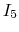
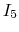

Solution:

Solution:
move two voltage sources to left, and 3 resistor to the right as load
find equivalent voltage Vo and internal resistance and Ro.
resistor to the right as load
find equivalent voltage Vo and internal resistance and Ro.
The current going clockwise around the loop (without load) is
,
the voltages across the 6 resistor and 12
resistor and 12 resistor are -2V and 4V,
respectively.
resistor are -2V and 4V,
respectively.

Solution:
Hint: It is very hard to solve the problem by finding the currents in
the order of  , , , as computing the resistances of the resistor
network is tedious. However, it is much more straight forward to find the
currents in the order of , ,
, , , as computing the resistances of the resistor
network is tedious. However, it is much more straight forward to find the
currents in the order of , ,  , if you assume is known,
e.g., . However, the voltage for the voltage source obtained
based on this assumption is of course not as given (120V). In this case, the
linearity property
can be applied. In particular,
given , then
. Use this relationship to find the
actual values of the currents.
, if you assume is known,
e.g., . However, the voltage for the voltage source obtained
based on this assumption is of course not as given (120V). In this case, the
linearity property
can be applied. In particular,
given , then
. Use this relationship to find the
actual values of the currents.

Solution:

Solution:
First consider current through  caused by each of the three
sources alone:
caused by each of the three
sources alone:
current thru R6:
current thru R4:
current thru R1 is (half of that thru R6): 5/3
is the sum of the currents thru R4 and  :
(right)
:
(right)
Next consider the current thru V2: (left) or 2 (right):
Alternatively, use loop current method:

Solution: